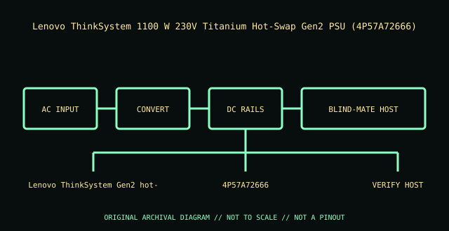

[ POWER CONVERSION // IDENTIFIED MODEL ]
Lenovo ThinkSystem 1100 W 230V Titanium Hot-Swap Gen2 PSU (4P57A72666)
Exact module identity: Lenovo 4P57A72666. This record applies only to this manufacturer option/PID; nominal wattage or a similar shell does not prove cross-model compatibility.

HIGH-VOLTAGE WARNING: Disconnect mains before external inspection. Never open a PSU. Internal capacitors may retain lethal charge after unplugging. Do not probe or repair its interior; use qualified service or replace the unit.
Model-specific ratings & fit
| Manufacturer identity / exact module | Lenovo 4P57A72666 — Lenovo ThinkSystem 1100 W 230V Titanium Hot-Swap Gen2 PSU (4P57A72666) |
|---|---|
| Rated output / rail information | 1100 W; +12 VDC main output (1100 W / 91.7 A equivalent at 12 V); system standby/control outputs are provided through the proprietary power interface as specified for the host. |
| AC input | 200–240 V AC, 50/60 Hz (230 V-class option; not for 100–120 V operation). |
| Efficiency | 80 PLUS Titanium |
| Form factor / mounting | Lenovo ThinkSystem Gen2 hot-swap redundant server module. |
| Connectors / backplane | IEC AC inlet (use the Lenovo-approved cord); Lenovo proprietary blind-mate output into a compatible ThinkSystem power cage/backplane. |
| System compatibility | Use only in Lenovo ThinkSystem platforms shown for option 4P57A72666 in ServerProven; Lenovo documents the hot-swap bay/procedure for SR650 V2. Compatibility varies by machine type and configuration. |
| Redundancy / cooling | Hot-swap only if another supported supply is present and the system indicates redundancy; follow Lenovo service procedure and maintain the chassis airflow path. |
| Revision distinctions | The 230 V Titanium Gen2 part 4P57A72666 is distinct from the existing 1100 W Platinum ThinkSystem record. Do not substitute across generation, voltage class or cable set. |
Compatibility & safe installation
- Confirm full manufacturer part/PID, revision and label against the host’s exact system QuickSpecs, service manual and power-supply matrix.
- Check input voltage, rail limits, connector/backplane keying, bay dimensions, supported efficiency class and cooling direction before installation.
- Hot-plug is conditional: verify healthy remaining supply capacity, supported redundancy state and the host service procedure before removing a live module.
- Do not mix modules or use modular leads across models unless the system manufacturer explicitly approves that combination.
- Never open or probe a PSU. Retire damaged, wet, burnt, corroded, modified or unidentified units.
Revision & archival notes
The 230 V Titanium Gen2 part 4P57A72666 is distinct from the existing 1100 W Platinum ThinkSystem record. Do not substitute across generation, voltage class or cable set.
Archive a clear nameplate photograph, complete option/FRU number, hardware revision, AC inlet and connector labels, host model, and source-document revision. Distinguish manufacturer ratings from derived values.
Manufacturer references
- Lenovo ServerProven — ThinkSystem 1100W 230V Titanium Hot-Swap Gen2 Power Supply (4P57A72666)Lenovo supported-option identity and platform compatibility.
- Lenovo ThinkSystem SR650 V2 — install a hot-swap power supplyManufacturer host installation, redundancy and service procedure.
- Lenovo ThinkSystem SR650 V2 — power supply unit replacementManufacturer replacement procedure and safety.
Manufacturer nameplate and applicable system manual take precedence over this summary.